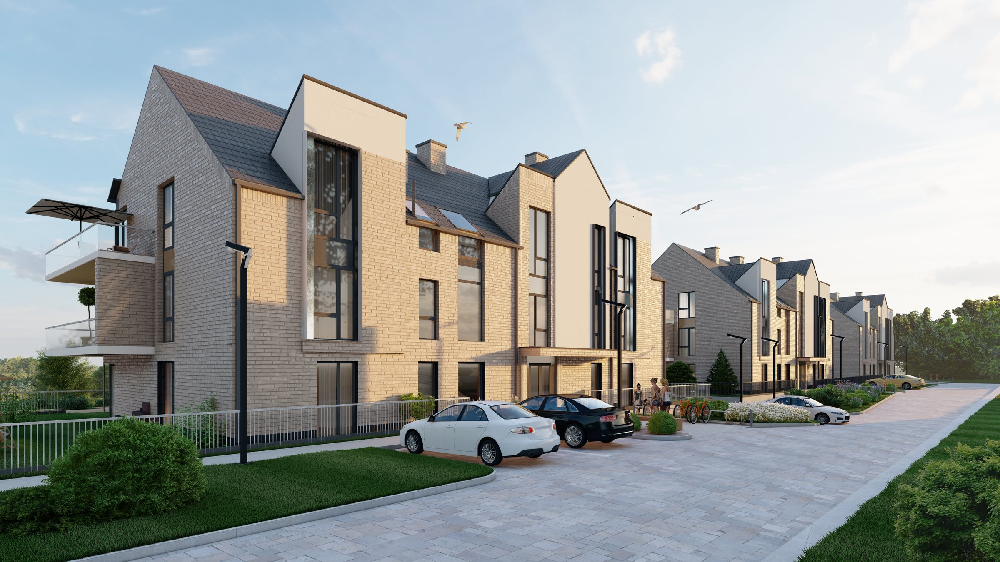
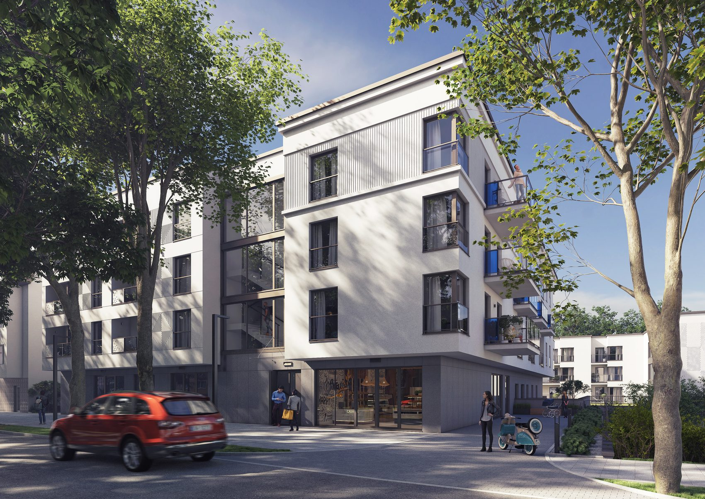
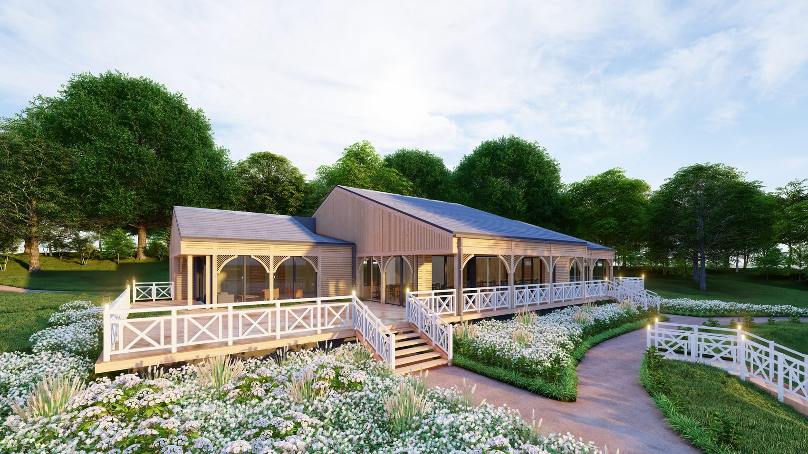

Kartuzy, Trójmiasto, Pomorze
Cały projekt budynku w jednym zespole
Architektura, konstrukcja, instalacje, wnętrza i uzgodnienia. Projektujemy od 1997 roku i zostajemy na budowie do końca.
- Od 1997 rokupracownia w Kartuzach
- I nagroda SARPkonkurs w Kwidzynie
- 10 branż projektowychw jednym opracowaniu
- Architekt i konstruktorz uprawnieniami
- Nadzór autorskido końca budowy
Projekty
Od domu jednorodzinnego po kwartał miasta
Mieszkaniówka, budynki publiczne, hale, przestrzenie miejskie i wnętrza. Poniżej wybór z tego, co projektowaliśmy w Kartuzach, Bytowie, Kwidzynie, Gdańsku i okolicach.



Zakres działań
Dziesięć branż, jedno biuro
Inwestor nie musi zbierać projektantów po kawałku. Architekt, konstruktor, elektryk i sanitarnik siedzą w jednym pokoju, więc rysunki się ze sobą zgadzają, a poprawka w jednej branży od razu wchodzi do pozostałych.
Konkurs SARP
Nasza koncepcja wygrała konkurs na kwartał rynku w Kwidzynie
Zadaniem było wpisać nową zabudowę mieszkalno-usługową w pierzeję zabytkowej starówki. Jury oddziału Wybrzeże SARP wybrało naszą pracę spośród zgłoszeń z całego kraju.
Jak pracujemy
Pięć etapów, jeden rozmówca
Prowadzimy inwestycję od pierwszej rozmowy o działce do ostatniego wpisu w dzienniku budowy. Na każdym etapie wiadomo, kto odpowiada za co.
Rozmowa i teren
Ustalamy, co ma powstać, i sprawdzamy działkę: plan miejscowy, warunki zabudowy, media, dojazd.
Koncepcja
Rzuty, bryła i wizualizacja. Na tym etapie widać budynek, zanim powstanie kosztorys.
Projekt budowlany
Architektura, konstrukcja, instalacje elektryczne i sanitarne. Wszystko u nas, bez zlecania na zewnątrz.
Uzgodnienia
Opinie i uzgodnienia wymagane przepisami, komplet dokumentów do pozwolenia na budowę.
Nadzór autorski
Jesteśmy na budowie do końca. Wykonawca ma z kim rozmawiać, gdy coś trzeba rozstrzygnąć.

Kontakt
Opowiedz, co chcesz zbudować
Zadzwoń albo napisz. Powiedz, gdzie jest działka i co ma na niej stanąć. Odezwiemy się z tym, co da się na niej zrobić i czego będzie potrzeba do pozwolenia.
Archigraph Inwestycje Sp. z o.o.
ul. Kościerska 11, 83-300 Kartuzy
Ocena 5,0 na podstawie 3 opinii w Google.